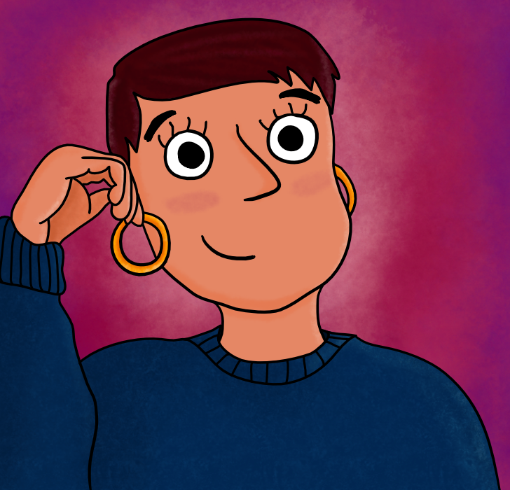

gabrielaturquetti

gabriela-turquetti
gturquetti
Github
turquetti
Eu sou a Gabriela, Gabi ou Gab!
Uma cientista olhando para novos horizontes, sempre estou em busca de oportunidades que instiguem minha criatividade e que me tragam felicidade e satisfação. Ah, eu amo gatos!
Veja meu CV!gabrielaturquetti
gabriela-turquetti
gturquetti
Github
turquetti